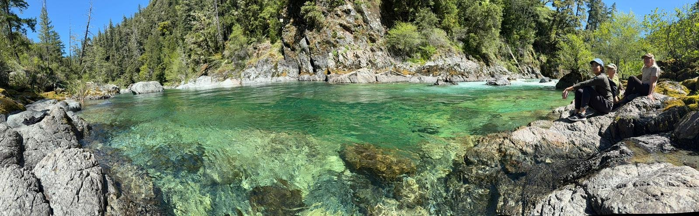

Space Zero is a place of gathered attention. The things we do here are simple — sitting together, breathing, making, listening, noticing — and the simplicity is the point.
All practices are open to any level of familiarity, and most are offered without cost. Donations support the space and the practitioners.
Careful, open-ended inquiry into the conditions of attention, creativity, and human flourishing — held alongside the sciences of nature and the tools of our time. Rigour and curiosity in the same hand; no question too ordinary or too strange to take seriously.
An interdisciplinary gathering given to the question of benevolent emergent intelligence — and to the shape of a future good for human and non-human life alike. Discussion allowed to find its own form.
Spiritual teachers, artists, and philosophers in residence — living alongside researchers and the local community, letting wisdom take root in place rather than only in pages. Conversation more than performance.
Local in place, open to the wider world. We share what we learn, attend to how groups move in concert, and study the quiet conditions of being together well — attunement, entrainment, the felt sense of moving in time with others.
The ground the others stand on. Sitting, breathing, moving, tending — the daily return to a state of open attention, before ideas, before labels.

This is illustrative — a shape the week tends to take. Specific gatherings and timings are announced as they take form.
All of this begins, again and again, from zero — the space where new things become possible.